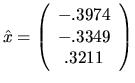
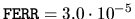

Let Ax=b be the system to be solved, and  the computed
solution. Let n be the dimension of A.
An approximate error bound
for
the computed
solution. Let n be the dimension of A.
An approximate error bound
for  may be obtained in one of the following two ways,
depending on whether the solution is computed by a simple driver or
an expert driver:
may be obtained in one of the following two ways,
depending on whether the solution is computed by a simple driver or
an expert driver:
EPSMCH = SLAMCH( 'E' )
* Get infinity-norm of A
ANORM = SLANGE( 'I', N, N, A, LDA, WORK )
* Solve system; The solution X overwrites B
CALL SGESV( N, 1, A, LDA, IPIV, B, LDB, INFO )
IF( INFO.GT.0 ) THEN
PRINT *,'Singular Matrix'
ELSE IF (N .GT. 0) THEN
* Get reciprocal condition number RCOND of A
CALL SGECON( 'I', N, A, LDA, ANORM, RCOND, WORK, IWORK, INFO )
RCOND = MAX( RCOND, EPSMCH )
ERRBD = EPSMCH / RCOND
END IF
For example, suppose4.11
 ,
,
CALL SGESVX( 'E', 'N', N, 1, A, LDA, AF, LDAF, IPIV,
$ EQUED, R, C, B, LDB, X, LDX, RCOND, FERR, BERR,
$ WORK, IWORK, INFO )
IF( INFO.GT.0 ) PRINT *,'(Nearly) Singular Matrix'
For the same A and b as above,
,
,
and the actual error is
 .
.
This example illustrates that the expert driver provides an error bound with less programming effort than the simple driver, and also that it may produce a significantly more accurate answer.
Similar code fragments, with obvious adaptations, may be used with all the driver routines for linear equations listed in Table 2.2. For example, if a symmetric system is solved using the simple driver xSYSV, then xLANSY must be used to compute ANORM, and xSYCON must be used to compute RCOND.